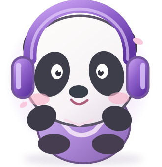

🌸 ПРОИЗНОШЕНИЕ
Научись звучать по-китайски
Слушай настоящие китайские слоги, сравнивай звуки и повторяй в своём темпе.

Моя практика0 из 190 прослушано
Подготавливаем карточки и звуки…
🎙 СРАВНИ СВОЙ ГОЛОС
Послушай → повтори → сравни
Запись остаётся на устройстве. Автоматической оценки тонов нет.
Звуковые примеры из сохранённой тестовой библиотеки. Перед коммерческим выпуском требуется подтверждённая лицензия или замена записей.